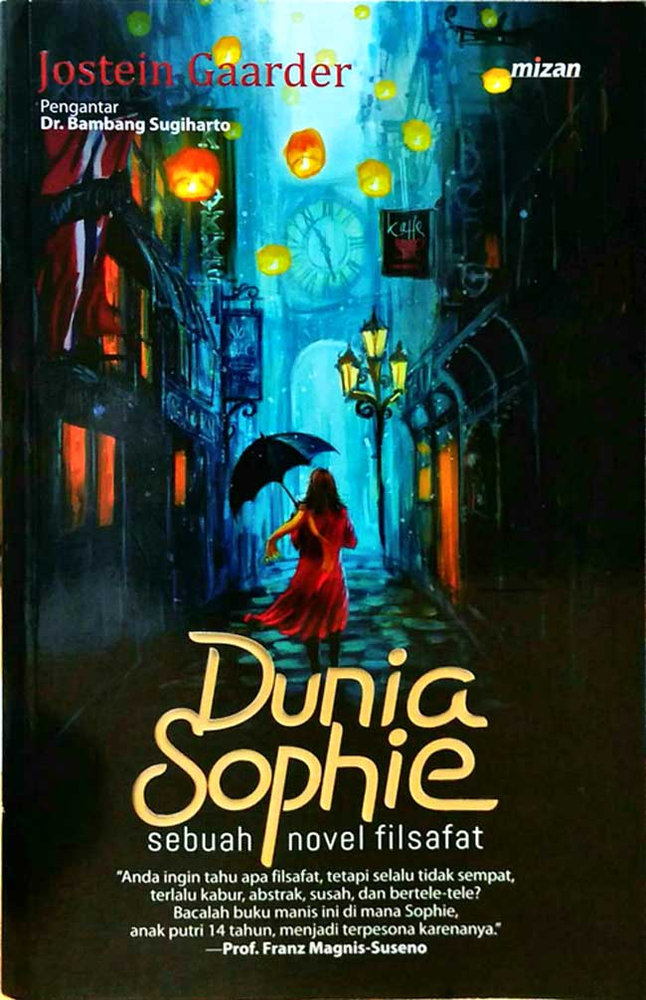

DigitalCollection

Daya Tarik Kampung Baduy
by Robby Binarwan
Buku ini menceritakan Sebuah Kampung bernama Kampung Baduy. Kampung Baduy
merupakan daerah tujuan wisata yang mempunyai daya tarik
selain alam juga budayanya. Mereka menjaga erat nilai dan norma serta adat istiadat
masyarakatnya yang masih terisolir dengan sengaja mengasingkan diri, hidup mandiri tidak
mengharapkan bantuan dari orang luar.
wisatawan dan mempunyai nilai jual.
Download
C++ Programming
by D.S. Malik
Buku ini ditulis khusus untuk pelajar dan bukan untuk profesional TI, buku ini
menawarkan cakupan komprehensif topik pengantar pemrograman C dan kemudian menggerakkan
siswa dengan percaya diri ke dalam konsep yang
lebih maju. Menampilkan pemecahan masalah di seluruh teks, contoh-contohnya relevan
dengan C dan memberikan contoh-contoh pemrograman umum yang mendasar.
Download
Sebuah Seni Untuk Bersikap Bodo Amat
by Mark Ronson
Buku ini menceritakan kisah Harles Bokowski, seorang pecandu alkohol, penjudi, kasar,
pelit dan tukang utang yang suka berjudi dengan wanita. Ia bercita-cita menjadi seorang
penulis. Karya Bukowski secara selalu ditolak oleh hampir semua majalah, namun ia tidak
menyerah dan terus menulis dan mengarang puisi.
Download

Rumah Lebah
by Ruwi Meitasari
Mala, gadis kecil berusia enam tahun yang terobsesi dengan ensiklopedia. Dia hanya
membaca buku ensiklopedia dan selalu mengurutkan buku satu sampai buku terakhir dari
sisi kiri ke sisi kanan. Dia juga tertarik dengan beruang.
Di rumah, Mala hanya tinggal bersama orangtuanya, tetapi dia selalu membicarakan enam
orang asing yang hidup bersama di dalam rumahnya. Dia selalu takut pada Satira,
bersahabat dekat dengan Wilis, berbicara dengan Tante Ana yang suka berdandan, belajar
bahasa Spanyol dengan Abuela, dan si Kembar yang hanya bisa mendengar, melihat dan
mencatat.
Download
Listen


Dunia Sophie
by Jostein Gaarder
Sophie merupakan seorang pelajar sekolah menegah yang berusia 14 tahun. Namun suatu
hari setelah pulang sekolah, ia mendapatkan sebuah surat misterius yang hanya berisikan
satu pertanyaan "Siapa Kamu?". Hal ini tentunya membuat Sophie heran, pada hari yang
sama dia juga mendapatkan surat lain yang bertanya"Dari manakah datangnya dunia?". Hal
ini tentunya membuat ia tersentak dari rutinitas hidup sehari-hari, surat itu selalu
membuat Sophie mempertanyakan soal-soal mendasar yang tak pernah dipikirkannya selama
ini.
Subscribe

Komet Minor
by Tere Liye
Sebelum kita mulai, mari kita mebaca basmalah. Bismillah. Selanjutnya buku ini
melanjutan kisah dari buku sebelumnya yaitu Komet, dimana berakhir saat itu berupa
pengkhiatan oleh Max alias Si Tanpa Mahkota yang mengkhianati kebaikan tiga remaja
petarung yang berasal dari klan berbeda: Raib (Klan Bulan), Seli (Klan Matahari, dan Ali
(Klan Bumi).Di detik-detik terakhir di tepi pulau portal Komet Minor, diam-diam Ali
memanggil Batozar lewat cermin yang ia bawa selalu. Batozar pun muncul dan menyelamatkan
Raib dan teman-teman.
Download